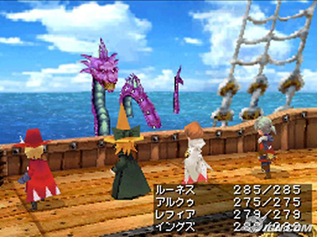
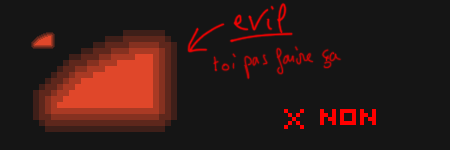
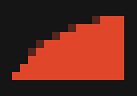
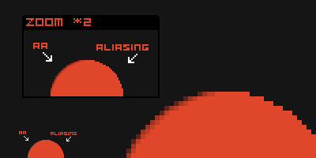
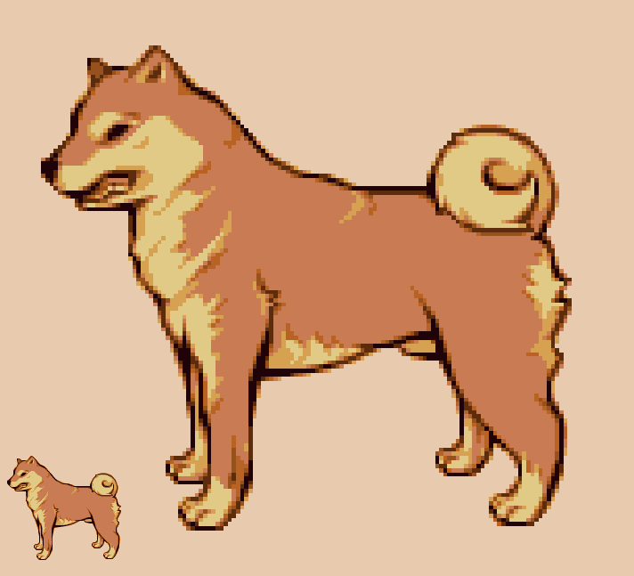

Cours de pixel art 7 : anti-aliasing
Là où tous vos pixel arts deviennent beaux. Ou Pas. Ou si en fait, ça dépend à quel point ils étaient moches avant.

Si vous avez le courage de lire de nos jours la presse « spécialiste » du jeu vidéo, vous avez sans doute déjà vu des journalistes se plaindre de l'aliasing dont souffrent certains jeux. Il s'agit du phénomène qui survient quand un objet au premier plan se trouve devant un fond de couleur distincte : le contour de l'objet se détache du fond et « on voit les pixels » sous forme d'un affreux crénelage des bords.
Plan d'attaque
Les jeux en 3D sont les principales victimes du phénomène, étant donné que les algorithmes de lissage automatique sont couteux en temps de calcul. Exemple ci-dessous avec Final Fantasy III version Nintendo DS. L'aliasing est particulièrement visible sur les bords des vêtements du personnage en noir.

Les jeux en 2D ne sont pas trop touchés car il existe depuis toujours une bonne vieille méthode de pixel art, l'anti-aliasing, pour lisser tous ces affreux contours et adoucir les transitions entre objets et arrière plan. En effet, ici pas besoin d'algorithme de la muerte : il suffit que les graphistes (ça c'est vous) y pensent à l'avance.Pensons donc un peu si vous le voulez bien.
On peut distinguer trois situations dans lesquels le phénomène d'aliasing peut survenir, et il va falloir agir en conséquence.
- J'ai deux couleurs différentes sur mon sprite et la transition entre les deux couleurs est aliasée (drame !).
Dans ce cas là, on va pouvoir appliquer les techniques d'anti-aliasing à loisir pour adoucir cette transition. - Je veux adoucir la transition entre mon sprite et le décor et je connais à peu près la couleur du décor.
Dans ce cas de figure, vous pourrez anti-aliaser les bords de votre sprite pour que la transition avec le décor ne soit pas trop brutale. - Je veux adoucir la transition de mon sprite avec les décors mais je ne sais pas à quoi ils ressemblent.
C'est par exemple le cas du héros de votre jeu, il va passer par toute une variété d'arrière-plans, ET BIEN NE FAITES RIEN. Voilà c'est dit. Il serait idiot de modifier les bords de votre sprite pour adoucir une transition puisque vous ne savez pas vers quelle couleur adoucir les contours.
Voilà, maintenant vous savez pourquoi et quand utiliser l'Anti-Aliasing…reste à découvrir comment !
A l'assaut !
Bien. Comment adoucir ces fameuses transitions entre deux couleurs ? La réponse est plutôt évidente, il suffit d'utiliser une ou plusieurs couleurs intermédiaires (par exemple du gris pour aller entre du blanc et du noir), que l'on appelle teintes tampons (buffer shades). Toute la subtilité réside dans la façon de s'en servir. En effet, la brute sanguinaire et dénuée de tout sens artistique qui sommeille en vous a surement très envie de faire quelque chose comme ceci :

Argh ! C'est juste immonde. J'espère que vous vous en rendez compte aussi bien que moi, mais non seulement cette erm…« méthode » prend beaucoup de temps à mettre en œuvre (le pixel art est déjà assez fastidieux comme ça) mais surtout elle ne résout pas notre problème de transition. Bref, il ne suffit pas de faire N'IMPORTE QUOI avec les teintes tampons pour anti-aliaser. L'anti-aliasing est une technique DISCRÈTE, gardez ça en tête. Maintenant que vous savez ce qu'il ne faut surtout pas faire (d'infâmes contours), voyons ce qu'il faut effectivement faire. D'abord les images, ensuite les mots.

Occupons nous d'un petit arc de cercle orange qui tranche violemment avec son fond gris foncé. A gauche, la bête à l'état naturel. A droite, les étapes successives du processus d'anti-aliasing. Commençons par remarquer que le bord de l'arc de cercle est une suite de différents segments, ceux du bas sont de longueur 1, il y en a ensuite deux de longueur 2 et enfin deux de longueur 3 (cela devrait un peu vous rappeler le chapitre sur les courbes). Nous allons nous occuper séparément de chaque segment, en considérant les lignes de l'image les unes après les autres. Dans le cas de segments verticaux (c'est à dire pas comme ici), on considèrerait les colonnes de l'image les unes après les autres.
Sur chaque ligne, on répartit de part et d'autre de la frontière des pixels des teintes tampons pour adoucir la transition (oui on fait un petit dégradé pour le coup), mais attention : si vous vous écartez trop de la « frontière » de vos deux teintes, vous allez détruire la forme originelle (et vous rapprocher de l'exemple de ce qu'il ne fallait pas faire). Vos teintes tampons ne doivent pas s'étaler plus loin que les extrémités des segments des lignes au dessus et au dessous, cela semble très compliqué mais en fait pas du tout, regardez les dessins : à la dernière étape, les segments de 1 pixels ne bénéficient que de deux pixels d'AA car sinon ils déborderaient sur les segments voisins et créeraient un effet appelé « banding » très déplaisant (et assez proche de l'exemple « à ne pas suivre » ci-dessus). Il ne faut surtout pas réaliser un « contour » autour de votre forme.
Au besoin, on peut se permettre quelques ajustements si malgré toutes les précautions prises l'AA dénature un peu la forme de l'objet mais cela n'a pas été le cas ici. Aussi, sachez qu'il n'est pas indispensable d'anti-aliaser les segments de longueur 1 (les lignes à 45°) qui s'en sortent généralement assez bien au naturel.
La victoire est totale chef !
Les résultats sont immédiatement visibles (ça ou alors vous avez immédiatement besoin d'une paire de lunettes). Voilà ce que cela donne sur notre cercle orange (en plus vous l'avez genre image de pub avant/après) et sur notre bon vieux dragon qui pour le même prix s'est vu élargir sa palette.

Remarquez également que j'ai un peu calmé l'ambient lighting sur le dragon. Comme annoncé précédemment, c'est une technique à utiliser avec parcimonie. Terminons par une petite note technique pour les plus débrouillards d'entre vous et que je ne savais pas trop où caser : vos teintes tampons ne doivent pas nécessairement être des couleurs dont la teinte, la saturation et la luminosité sont comprises entre celles des couleurs à lisser. Si vous voulez optimiser un peu vos palettes, vous pouvez tenter d'exploiter différents gris car ils ont le don de pouvoir servir dans des rampes de différents couleurs et font des merveilles pour l'anti-aliasing.
Concluons tout ce bazar avec un superbe pixel art généreusement fourni par Panda, qui maîtrise l'anti-aliasing bien mieux que moi (et que vous aussi). Cliquez sur l'image pour la voir en grand et n'oubliez pas d'essuyer le filet de bave de votre clavier après avoir observé le détail.

Ajouter un commentaire
Commentaires

Bonjour , ce cours est tres bien , mais pas adapté au pixel art des consoles rétro , vous avez des def de 400x400 pixel pour un perso , la ou dans super mario kart par exemple , avec 32x32 ils te mettent mario dans un karting , la avec 32x32 je mets juste l'oreille du chien de votre exemple

@Suisei > C'est effectivement un très bonne solution. Cet article a été écrit à la création du site et le gros du public était alors composé d'utilisateurs de RPG Maker (qui ne gérait pas la transparence des PNG). Une petite mise à jour ne ferait pas de mal.
Merci pour les compliments !
Bonjour,
Je me posais une question. Vu que le format de fichier final privilégié est le PNG, sur les sprites comme celui du héros, pourquoi ne pas "anti-aliaser" avec des niveaux de transparence pour palier le problème des background variables ?
En tout cas, merci pour votre cours de pixel art, très complet, très bien fait. Je l'ai dévoré. =)
Suisei/Killfaeh

Bonjour je cherche un site la ou je peut m'entrainer avec les pixel art gratuit svp
Super cours merci beaucoup !
Tout dépend de ce qu'on entend par à l'ancienne. L'anti-aliasing encourage à rajouter des couleurs à la palette, ce qui finit par enfreindre les restrictions imposées par les vieilles machines (une Game Boy n'utilise que 4 couleurs par exemple).
La technique est cependant très ancienne et on en trouve des exemples sur C64 à la pelle. Sur Nes aussi en cherchant bien.
Mais si on veut donner un effet pixelart à l'ancienne, faut-il faire de l'anti-aliasing ?
--doudoulolita